深色石板、古铜边饰与青绿符纹。卡牌主体全部透明；文字与数值独立绘制。
插画已加入运行映射；新 UI 组件为已导出的设计资源，尚待客户端接入和实机验收。
流程用于说明视觉和交互状态，属于手工设计稿，不是游戏存档或可执行规则重放。方向键可切换状态。
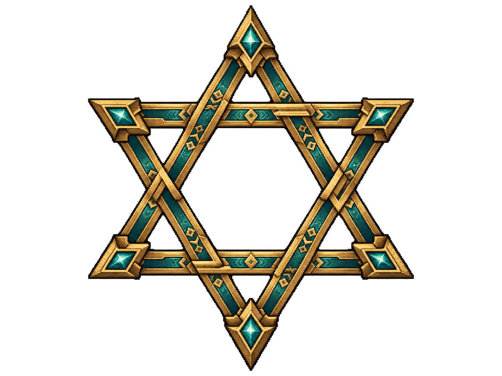
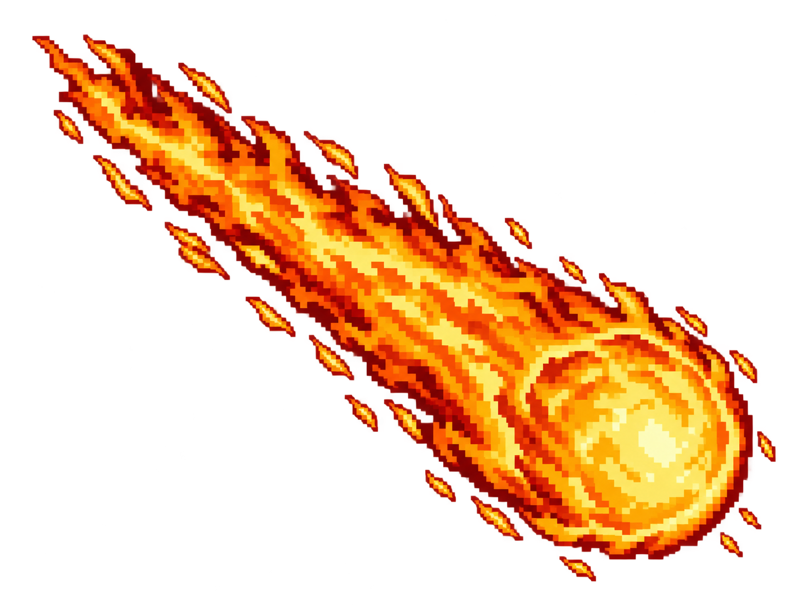
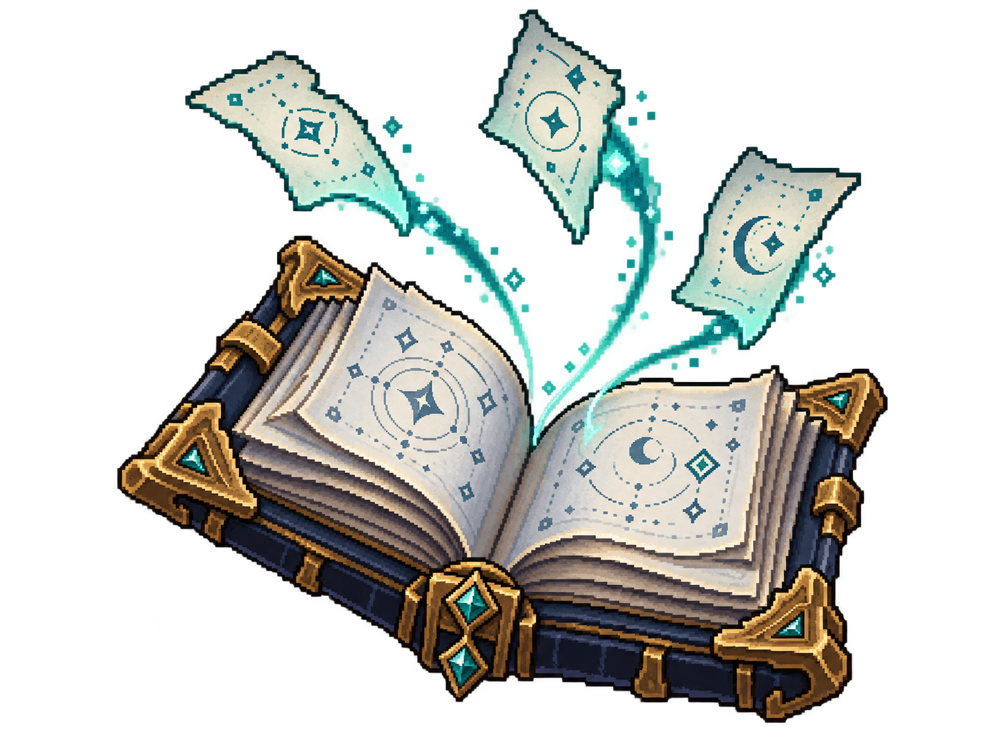
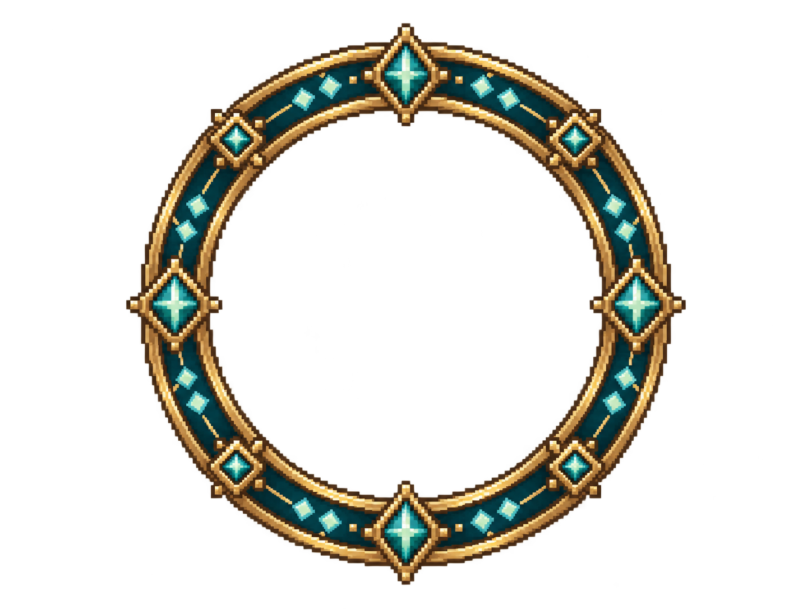
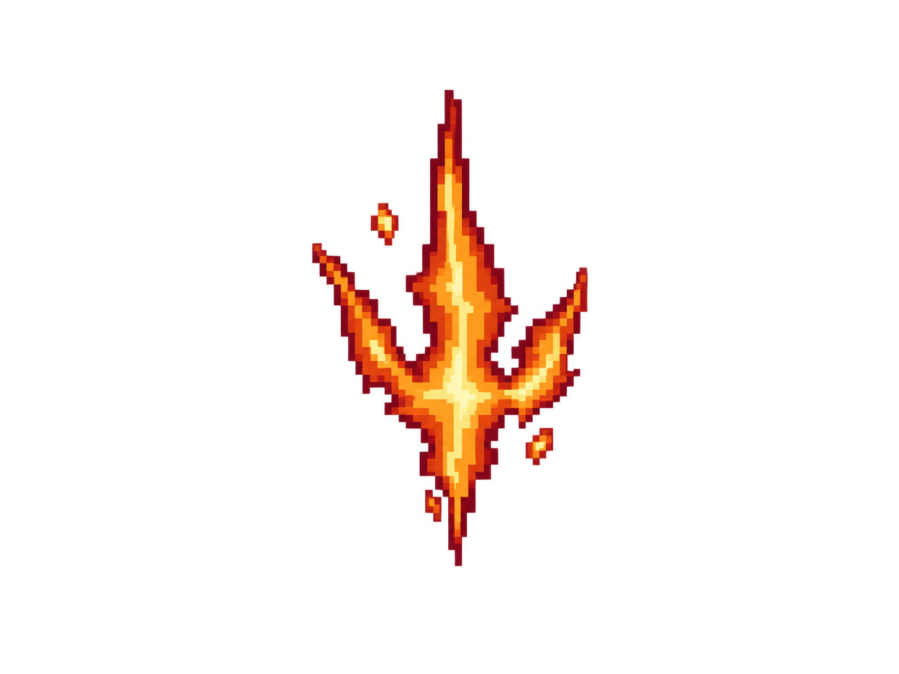
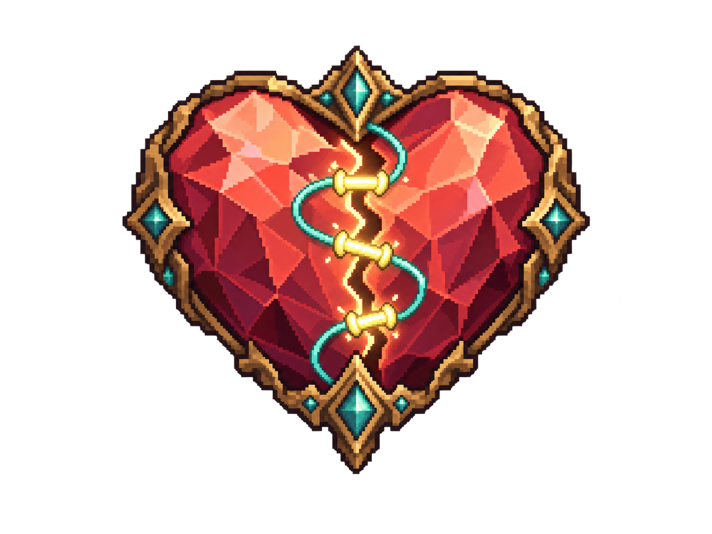
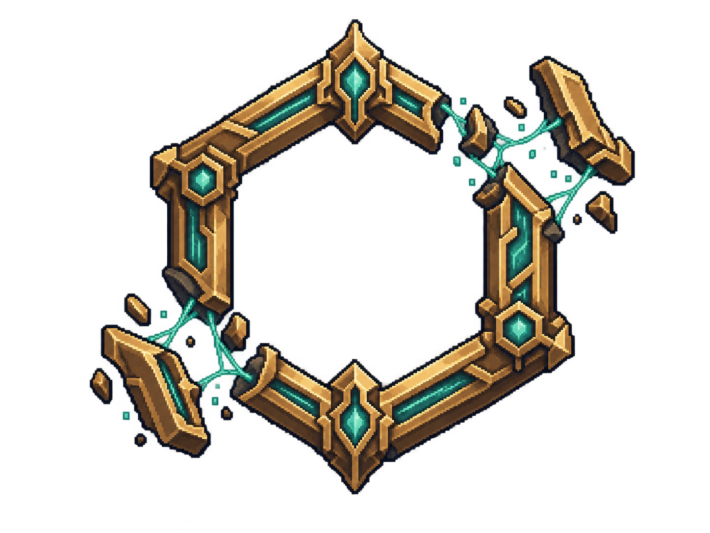
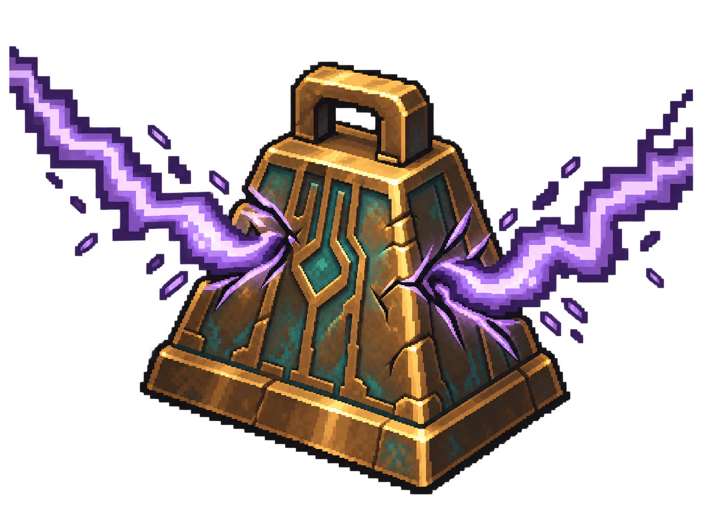
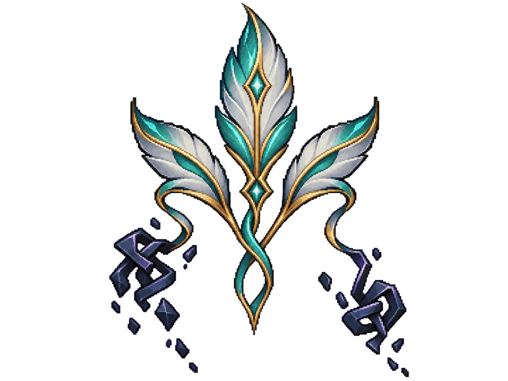
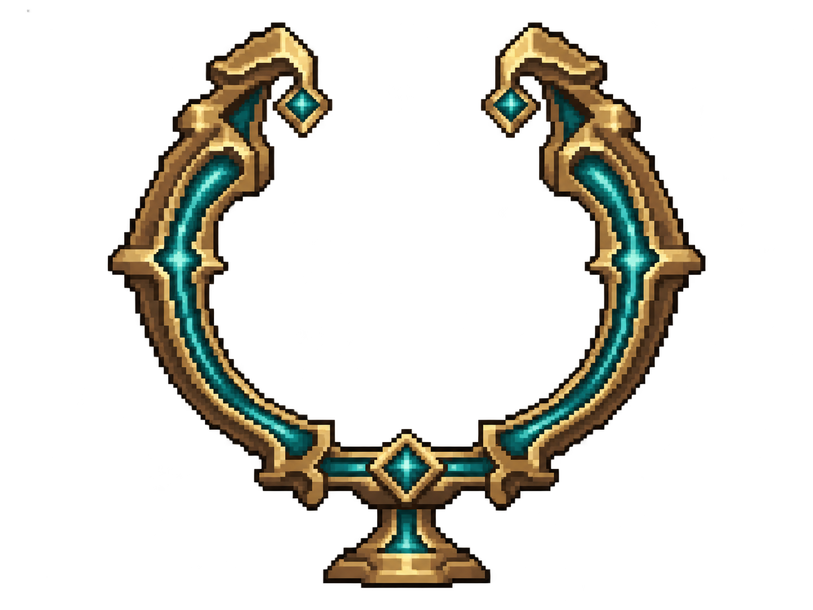
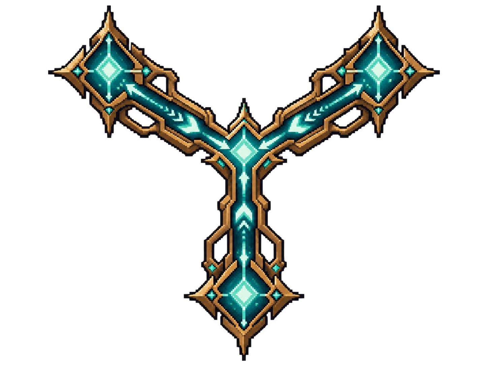
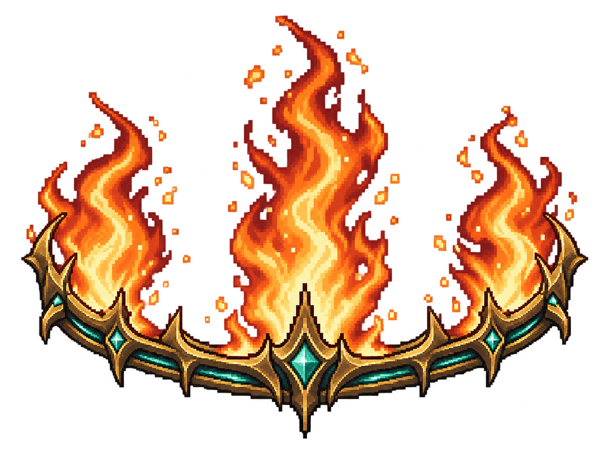
190 张 PNG 均不含烘焙文字，采用固定色板和二值透明度；图标包含 32px 与 64px 两种导出。插画保留 AI 原始像素风结果，未宣称通过严格限色精修。
完整资源清单与尺寸 · 颜色与状态规范
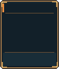
行动 handframe_action_hand101 × 118 · SVG 源稿
frame_action_hand
行动 stripframe_action_strip125 × 44 · SVG 源稿
frame_action_strip
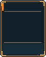
行动 portraitframe_action_portrait90 × 112 · SVG 源稿
frame_action_portrait
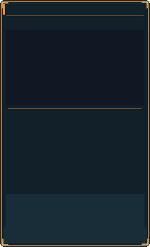
行动 detailframe_action_detail215 × 354 · SVG 源稿
frame_action_detail
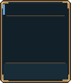
解析法术 handframe_analytic_hand101 × 118 · SVG 源稿
frame_analytic_hand
解析法术 stripframe_analytic_strip125 × 44 · SVG 源稿
frame_analytic_strip
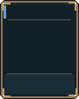
解析法术 portraitframe_analytic_portrait90 × 112 · SVG 源稿
frame_analytic_portrait
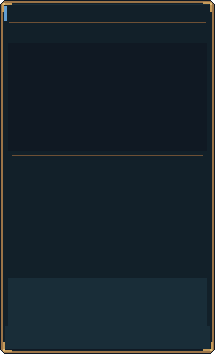
解析法术 detailframe_analytic_detail215 × 354 · SVG 源稿
frame_analytic_detail
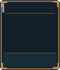
言灵 handframe_word_hand101 × 118 · SVG 源稿
frame_word_hand
言灵 stripframe_word_strip125 × 44 · SVG 源稿
frame_word_strip
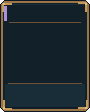
言灵 portraitframe_word_portrait90 × 112 · SVG 源稿
frame_word_portrait
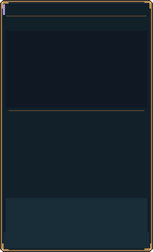
言灵 detailframe_word_detail215 × 354 · SVG 源稿
frame_word_detail
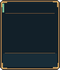
阵法 handframe_formation_hand101 × 118 · SVG 源稿
frame_formation_hand
阵法 stripframe_formation_strip125 × 44 · SVG 源稿
frame_formation_strip
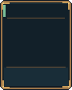
阵法 portraitframe_formation_portrait90 × 112 · SVG 源稿
frame_formation_portrait
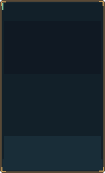
阵法 detailframe_formation_detail215 × 354 · SVG 源稿
frame_formation_detail
符文 handframe_seal_hand101 × 118 · SVG 源稿
frame_seal_hand
符文 stripframe_seal_strip125 × 44 · SVG 源稿
frame_seal_strip
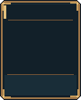
符文 portraitframe_seal_portrait90 × 112 · SVG 源稿
frame_seal_portrait
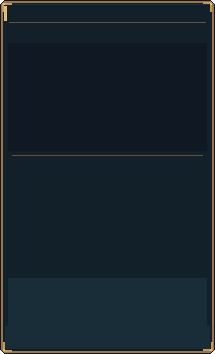
符文 detailframe_seal_detail215 × 354 · SVG 源稿
frame_seal_detail
稀有度独立标记；仍需动态文字rarity_common42 × 12 · SVG 源稿
rarity_common
稀有度独立标记；仍需动态文字rarity_uncommon42 × 12 · SVG 源稿
rarity_uncommon
稀有度独立标记；仍需动态文字rarity_rare42 × 12 · SVG 源稿
rarity_rare
稀有度独立标记；仍需动态文字rarity_epic42 × 12 · SVG 源稿
rarity_epic
稀有度独立标记；仍需动态文字rarity_legendary42 × 12 · SVG 源稿
rarity_legendary
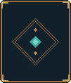
对称通用卡背；不携带私有信息card_back_hand101 × 118 · SVG 源稿
card_back_hand
对称通用卡背；不携带私有信息card_back_opponent39 × 41 · SVG 源稿
card_back_opponent
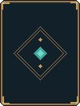
对称通用卡背；不携带私有信息card_back_deck100 × 132 · SVG 源稿
card_back_deck
缺图统一回退纹章missing_art64 × 64 · SVG 源稿
missing_art
区域框体：formationregion_formation106 × 52 · SVG 源稿
region_formation
区域框体：analysisregion_analysis427 × 52 · SVG 源稿
region_analysis
区域框体：castingregion_casting1080 × 65 · SVG 源稿
region_casting
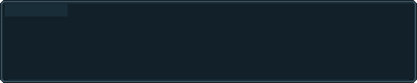
区域框体：wordsregion_words531 × 106 · SVG 源稿
region_words
区域框体：actionregion_action531 × 49 · SVG 源稿
region_action
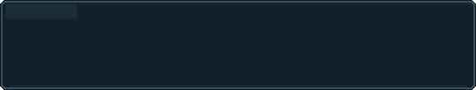
区域框体：ashregion_ash531 × 101 · SVG 源稿
region_ash
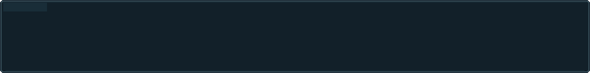
区域框体：handregion_hand1080 × 134 · SVG 源稿
region_hand
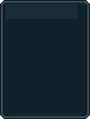
区域框体：deckregion_deck100 × 132 · SVG 源稿
region_deck
阵法槽状态slot_empty106 × 52 · SVG 源稿
slot_empty
阵法槽状态slot_occupied106 × 52 · SVG 源稿
slot_occupied
阵法槽状态slot_span106 × 107 · SVG 源稿
slot_span
宿主到解析行关联host_connector12 × 52 · SVG 源稿
host_connector
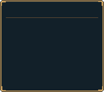
hudhud215 × 190 · SVG 源稿
hud
phase_barphase_bar700 × 42 · SVG 源稿
phase_bar
阶段指示 inactivephase_inactive22 × 22 · SVG 源稿
phase_inactive
阶段指示 currentphase_current22 × 22 · SVG 源稿
phase_current
阶段指示 completephase_complete22 × 22 · SVG 源稿
phase_complete
滚动位置提示scroll_track80 × 6 · SVG 源稿
scroll_track
滚动位置提示scroll_thumb80 × 6 · SVG 源稿
scroll_thumb
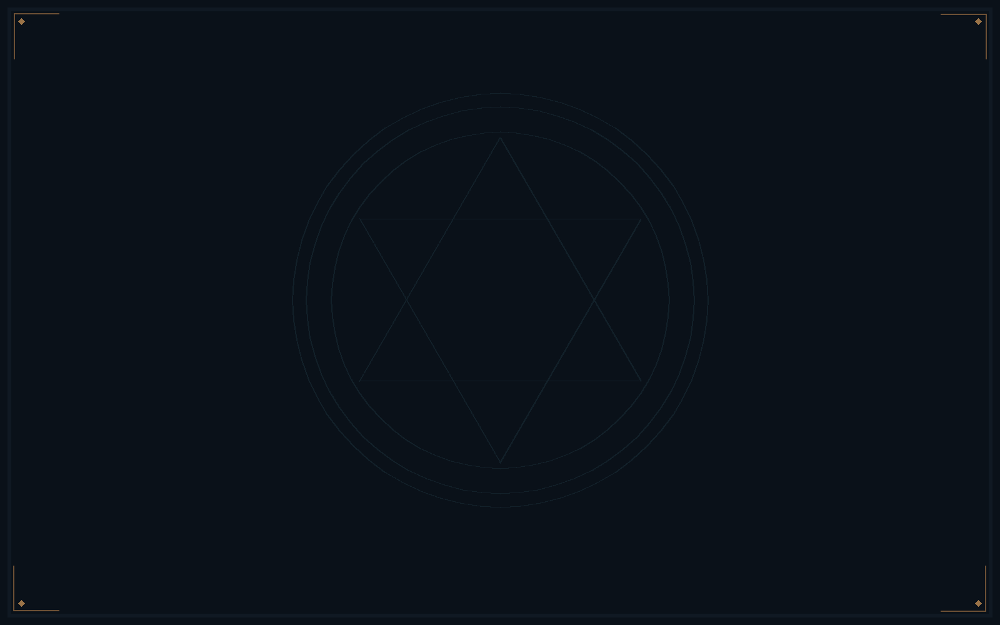
低对比无文字场地底图match_background1600 × 1000 · SVG 源稿
match_background
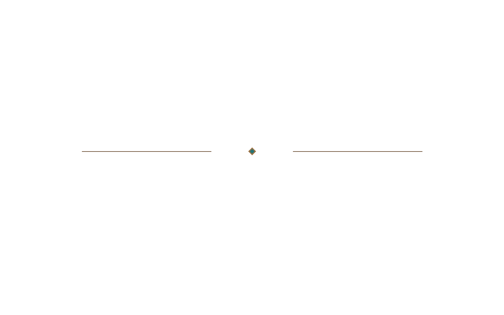
独立中央装饰层；不定义槽位board_decoration1600 × 1000 · SVG 源稿
board_decoration
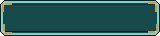
primary / normalbutton_primary_normal160 × 36 · SVG 源稿
button_primary_normal
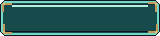
primary / hoverbutton_primary_hover160 × 36 · SVG 源稿
button_primary_hover
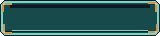
primary / pressedbutton_primary_pressed160 × 36 · SVG 源稿
button_primary_pressed
primary / disabledbutton_primary_disabled160 × 36 · SVG 源稿
button_primary_disabled
secondary / normalbutton_secondary_normal160 × 36 · SVG 源稿
button_secondary_normal
secondary / hoverbutton_secondary_hover160 × 36 · SVG 源稿
button_secondary_hover
secondary / pressedbutton_secondary_pressed160 × 36 · SVG 源稿
button_secondary_pressed
secondary / disabledbutton_secondary_disabled160 × 36 · SVG 源稿
button_secondary_disabled
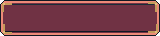
danger / normalbutton_danger_normal160 × 36 · SVG 源稿
button_danger_normal
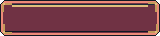
danger / hoverbutton_danger_hover160 × 36 · SVG 源稿
button_danger_hover
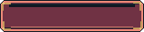
danger / pressedbutton_danger_pressed160 × 36 · SVG 源稿
button_danger_pressed
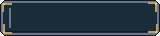
danger / disabledbutton_danger_disabled160 × 36 · SVG 源稿
button_danger_disabled
hoveroverlay_hand_hover101 × 118 · SVG 源稿
overlay_hand_hover
selectedoverlay_hand_selected101 × 118 · SVG 源稿
overlay_hand_selected
target_candidateoverlay_hand_target_candidate101 × 118 · SVG 源稿
overlay_hand_target_candidate
target_selectedoverlay_hand_target_selected101 × 118 · SVG 源稿
overlay_hand_target_selected
cost_candidateoverlay_hand_cost_candidate101 × 118 · SVG 源稿
overlay_hand_cost_candidate
cost_selectedoverlay_hand_cost_selected101 × 118 · SVG 源稿
overlay_hand_cost_selected
hoveroverlay_strip_hover125 × 44 · SVG 源稿
overlay_strip_hover
selectedoverlay_strip_selected125 × 44 · SVG 源稿
overlay_strip_selected
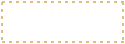
target_candidateoverlay_strip_target_candidate125 × 44 · SVG 源稿
overlay_strip_target_candidate
target_selectedoverlay_strip_target_selected125 × 44 · SVG 源稿
overlay_strip_target_selected
cost_candidateoverlay_strip_cost_candidate125 × 44 · SVG 源稿
overlay_strip_cost_candidate
cost_selectedoverlay_strip_cost_selected125 × 44 · SVG 源稿
overlay_strip_cost_selected
hoveroverlay_portrait_hover90 × 112 · SVG 源稿
overlay_portrait_hover
selectedoverlay_portrait_selected90 × 112 · SVG 源稿
overlay_portrait_selected
target_candidateoverlay_portrait_target_candidate90 × 112 · SVG 源稿
overlay_portrait_target_candidate
target_selectedoverlay_portrait_target_selected90 × 112 · SVG 源稿
overlay_portrait_target_selected
cost_candidateoverlay_portrait_cost_candidate90 × 112 · SVG 源稿
overlay_portrait_cost_candidate
cost_selectedoverlay_portrait_cost_selected90 × 112 · SVG 源稿
overlay_portrait_cost_selected
task_hinttask_hint800 × 36 · SVG 源稿
task_hint
action_baraction_bar672 × 44 · SVG 源稿
action_bar
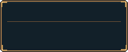
summarysummary215 × 88 · SVG 源稿
summary
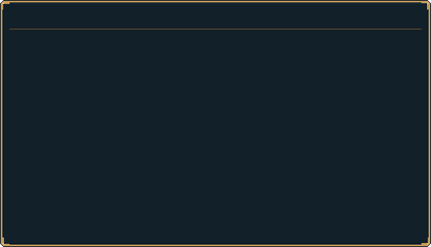
decisiondecision540 × 310 · SVG 源稿
decision
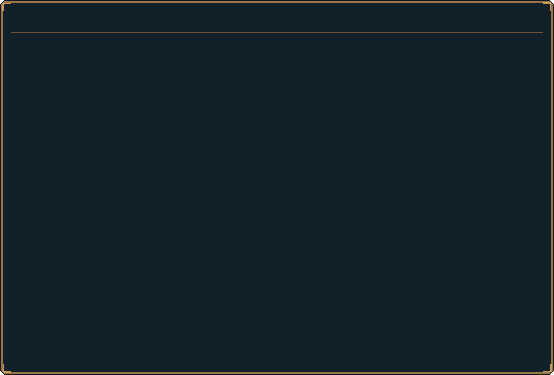
log_windowlog_window620 × 420 · SVG 源稿
log_window
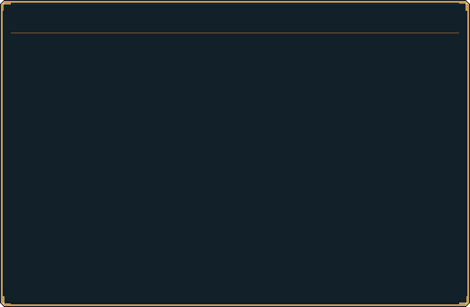
result_windowresult_window520 × 340 · SVG 源稿
result_window
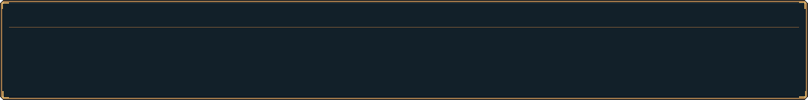
handoffhandoff1080 × 134 · SVG 源稿
handoff
victory结果标识result_victory96 × 64 · SVG 源稿
result_victory
defeat结果标识result_defeat96 × 64 · SVG 源稿
result_defeat
draw结果标识result_draw96 × 64 · SVG 源稿
result_draw
success反馈feedback_success360 × 48 · SVG 源稿
feedback_success
no_action反馈feedback_no_action360 × 48 · SVG 源稿
feedback_no_action
wrong_target反馈feedback_wrong_target360 × 48 · SVG 源稿
feedback_wrong_target
rejected反馈feedback_rejected360 × 48 · SVG 源稿
feedback_rejected
查看/目标/额外成本/确认步骤底板；文字动态绘制stepper_0480 × 32 · SVG 源稿
stepper_0
查看/目标/额外成本/确认步骤底板；文字动态绘制stepper_1480 × 32 · SVG 源稿
stepper_1
查看/目标/额外成本/确认步骤底板；文字动态绘制stepper_2480 × 32 · SVG 源稿
stepper_2
查看/目标/额外成本/确认步骤底板；文字动态绘制stepper_3480 × 32 · SVG 源稿
stepper_3
行动type_action32 × 32 · SVG 源稿
type_action
行动 2×type_action_6464 × 64 · SVG 源稿
type_action_64
解析法术type_analytic32 × 32 · SVG 源稿
type_analytic
解析法术 2×type_analytic_6464 × 64 · SVG 源稿
type_analytic_64
言灵type_word32 × 32 · SVG 源稿
type_word
言灵 2×type_word_6464 × 64 · SVG 源稿
type_word_64
阵法type_formation32 × 32 · SVG 源稿
type_formation
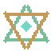
阵法 2×type_formation_6464 × 64 · SVG 源稿
type_formation_64
符文type_seal32 × 32 · SVG 源稿
type_seal
符文 2×type_seal_6464 × 64 · SVG 源稿
type_seal_64
位阶rank32 × 32 · SVG 源稿
rank
位阶 2×rank_6464 × 64 · SVG 源稿
rank_64
解析费用analysis_cost32 × 32 · SVG 源稿
analysis_cost
解析费用 2×analysis_cost_6464 × 64 · SVG 源稿
analysis_cost_64
施法费用cast_cost32 × 32 · SVG 源稿
cast_cost
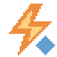
施法费用 2×cast_cost_6464 × 64 · SVG 源稿
cast_cost_64
阵体body32 × 32 · SVG 源稿
body
阵体 2×body_6464 × 64 · SVG 源稿
body_64
环位ring_slot32 × 32 · SVG 源稿
ring_slot
环位 2×ring_slot_6464 × 64 · SVG 源稿
ring_slot_64
魔素收入mana_income32 × 32 · SVG 源稿
mana_income
魔素收入 2×mana_income_6464 × 64 · SVG 源稿
mana_income_64
持续计数duration32 × 32 · SVG 源稿
duration
持续计数 2×duration_6464 × 64 · SVG 源稿
duration_64
解析中state_analyzing32 × 32 · SVG 源稿
state_analyzing
解析中 2×state_analyzing_6464 × 64 · SVG 源稿
state_analyzing_64
解析完成state_analyzed32 × 32 · SVG 源稿
state_analyzed
解析完成 2×state_analyzed_6464 × 64 · SVG 源稿
state_analyzed_64
待施放state_prepared32 × 32 · SVG 源稿
state_prepared
待施放 2×state_prepared_6464 × 64 · SVG 源稿
state_prepared_64
持续生效state_active32 × 32 · SVG 源稿
state_active
持续生效 2×state_active_6464 × 64 · SVG 源稿
state_active_64
准备被取消state_cancelled32 × 32 · SVG 源稿
state_cancelled
准备被取消 2×state_cancelled_6464 × 64 · SVG 源稿
state_cancelled_64
基础阵法保护state_protected32 × 32 · SVG 源稿
state_protected
基础阵法保护 2×state_protected_6464 × 64 · SVG 源稿
state_protected_64
符文附着state_attached32 × 32 · SVG 源稿
state_attached
符文附着 2×state_attached_6464 × 64 · SVG 源稿
state_attached_64
生命life32 × 32 · SVG 源稿
life
生命 2×life_6464 × 64 · SVG 源稿
life_64
魔素mana32 × 32 · SVG 源稿
mana
魔素 2×mana_6464 × 64 · SVG 源稿
mana_64
当前荷载load32 × 32 · SVG 源稿
load
当前荷载 2×load_6464 × 64 · SVG 源稿
load_64
荷载容量capacity32 × 32 · SVG 源稿
capacity
荷载容量 2×capacity_6464 × 64 · SVG 源稿
capacity_64
阵法zone_formation32 × 32 · SVG 源稿
zone_formation
阵法 2×zone_formation_6464 × 64 · SVG 源稿
zone_formation_64
解析zone_analysis32 × 32 · SVG 源稿
zone_analysis
解析 2×zone_analysis_6464 × 64 · SVG 源稿
zone_analysis_64
施法zone_casting32 × 32 · SVG 源稿
zone_casting
施法 2×zone_casting_6464 × 64 · SVG 源稿
zone_casting_64
言灵zone_words32 × 32 · SVG 源稿
zone_words
言灵 2×zone_words_6464 × 64 · SVG 源稿
zone_words_64
行动zone_action32 × 32 · SVG 源稿
zone_action
行动 2×zone_action_6464 × 64 · SVG 源稿
zone_action_64
灰烬zone_ash32 × 32 · SVG 源稿
zone_ash
灰烬 2×zone_ash_6464 × 64 · SVG 源稿
zone_ash_64
手牌zone_hand32 × 32 · SVG 源稿
zone_hand
手牌 2×zone_hand_6464 × 64 · SVG 源稿
zone_hand_64
牌库zone_deck32 × 32 · SVG 源稿
zone_deck
牌库 2×zone_deck_6464 × 64 · SVG 源稿
zone_deck_64
关闭close32 × 32 · SVG 源稿
close
关闭 2×close_6464 × 64 · SVG 源稿
close_64
确认confirm32 × 32 · SVG 源稿
confirm
确认 2×confirm_6464 × 64 · SVG 源稿
confirm_64
取消cancel32 × 32 · SVG 源稿
cancel
取消 2×cancel_6464 × 64 · SVG 源稿
cancel_64
向前滚动left32 × 32 · SVG 源稿
left
向前滚动 2×left_6464 × 64 · SVG 源稿
left_64
向后滚动right32 × 32 · SVG 源稿
right
向后滚动 2×right_6464 × 64 · SVG 源稿
right_64
向上up32 × 32 · SVG 源稿
up
向上 2×up_6464 × 64 · SVG 源稿
up_64
向下down32 × 32 · SVG 源稿
down
向下 2×down_6464 × 64 · SVG 源稿
down_64
保存save32 × 32 · SVG 源稿
save
保存 2×save_6464 × 64 · SVG 源稿
save_64
记录log32 × 32 · SVG 源稿
log
记录 2×log_6464 × 64 · SVG 源稿
log_64
投降surrender32 × 32 · SVG 源稿
surrender
投降 2×surrender_6464 × 64 · SVG 源稿
surrender_64
成功success32 × 32 · SVG 源稿
success
成功 2×success_6464 × 64 · SVG 源稿
success_64
无操作no_action32 × 32 · SVG 源稿
no_action
无操作 2×no_action_6464 × 64 · SVG 源稿
no_action_64
选错目标wrong_target32 × 32 · SVG 源稿
wrong_target
选错目标 2×wrong_target_6464 × 64 · SVG 源稿
wrong_target_64
操作拒绝rejected32 × 32 · SVG 源稿
rejected
操作拒绝 2×rejected_6464 × 64 · SVG 源稿
rejected_64
查看eye32 × 32 · SVG 源稿
eye
查看 2×eye_6464 × 64 · SVG 源稿
eye_64